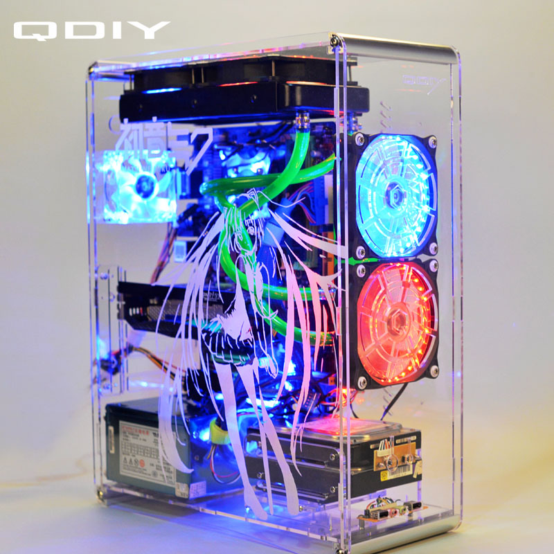

Az én számítógépem
| Memória |
Alaplap |
Processzor |
Videókártya |
| Kingston hyper X |
Szar Asrock |
Intel Celeron J1800 |
Nincs |
Star Wars E. GTX 1080TI |
| Mészáros Martin |
9/A.B. |
1 |
2 |
3 |
4 |
Most pedig bemutatok egy számítógép házat

A gépház az alábbiakat tartalmazza:
- Vízhűtés
- Világítós Ventillátor
- SATA 3-as merevlemezek